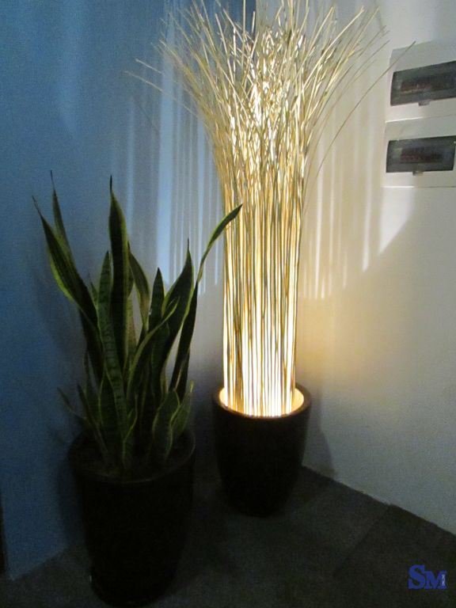
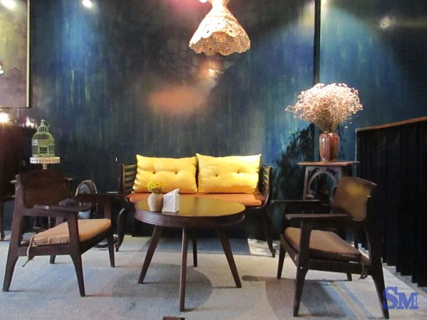

The Lissom Parlour: góc sang chảnh trên phố Nguyễn Hữu Huân
Vĩ Thanh
19:18 9/9/2016
Không gian thiết kế sang trọng, ấn tượng, đồ uống ngon và thái độ phục vụ của nhân viên khá chuyên nghiệp là những điểm cộng để kéo khách đến The Lissom Parlour, dù giá đồ uống, bánh ngọt tại quán cũng vào hàng “sang chảnh” tại Hà Nội.
Nguyễn Hữu Huân vốn nổi tiếng với những quán cà phê, bar-caffee mọc sát và sầm uất nhất tại Hà Nội. Người ta dễ dàng tìm thấy khá nhiều thương hiệu cà phê có tiếng, những quán cà phê được giới trẻ “check in” nhiều nhất trên tuyến phố này. Cũng bởi thế, sự cạnh tranh giữa các quán cà phê tại đây cũng khá khốc liệt và không phải quán cà phê nào mở ra cũng có thể tồn tại lâu dài hay ghi dấu ấn trong lòng khách đến.

Trần nhà được trang trí với nhiều mảnh gỗ độc đáo
Dù nằm trên con phố cà phê ấy, nhưng Lissom Parlour vẫn tạo ra sự khác biệt ngay từ lúc khách mở cửa bước vào quán. Không gian quán không quá rộng, được trang trí bằng tone màu trầm, nhẹ nhàng nhưng rất ấn tượng.
Gian ngoài tại tầng trệt có thể nhìn ngắm phố phường
Chỗ ngồi bên cạnh quầy pha chế với ánh sáng tự nhiên từ giếng trời
Góc nhỏ bên trong cùng của tầng trệt được bày trí đẹp mắt và yên tĩnh
Quán có 2 tầng. Tầng 1 là quầy pha chế cùng với những góc tận dụng rất khéo để tạo ra không gian cho khách ngồi. Đặc biệt, góc trong cùng của tầng 1 được bày biện ấm cúng. Với những thực khách muốn tìm góc riêng để làm việc, đọc sách hay trò chuyện thì đó sẽ là sự lựa chọn hay.

Chiếc đèn độc đáo chờ đợi khách khi bước lên tầng 2


Tầng 2 của quán thoáng và tận dụng thêm nhiều ánh sáng thiên nhiên
Những chiếc đèn và các góc nhỏ được trang trí rất ấn tượng
Tuy nhiên, tầng 2 vẫn được khách ưu tiên chọn do không gian thoáng, mở và đẹp mắt. Lối lên quán là cầu thang nhỏ, dài, trên cùng là chiếc đèn ấn tượng, khiến ai đó đang bước đi cũng muốn nhanh lên ngắm nhìn ánh sáng phía trên cầu thang ấy. Tầng 2 bài trí theo không gian vintage với những màu sắc đơn giản. Chỗ ngồi đẹp nhất là ba bàn ở phía gần cửa kính, đặc biệt là bàn sát cửa dành cho 2 người. Những chiếc đèn thiết kế độc đáo tại quán tỏa ánh sáng vàng nhẹ nhàng, tạo ra những họa tiết trên trần nhà cũng khiến khách ngồi ngắm nhìn thích thú.
Nhằm tạo sự ấm áp, nhẹ nhàng cho khách đến trò chuyện, thư giãn, nên quán không sử dụng ánh đèn quá sáng, đặc biệt là tại tầng 1. Bởi vậy, với những cô nàng thích chụp ảnh, tự sướng thì chỗ ngồi hợp lý có lẽ ở tầng 2, khu vực gần với cửa kính, có nhiều ánh sáng mặt trời.
Đồ uống tại quán đa dạng, nhất là những loại trà, cà phê hương vị khá thơm ngon, lạ, trình bày bắt mắt. Những set trà theo ấm tại quán được nhiều khách đi theo nhóm lựa chọn để thưởng thức cùng các loại bánh ngọt.
Giá đồ ăn, bánh ngọt tại quán thuộc hàng đắt so với mặt bằng chung. Giá nâu hay đen đá là 65 nghìn đồng/món, cà phê hay trà cốc dao động trong khoảng 60-110 nghìn đồng, trà theo ấm khoảng 130-135 nghìn đồng, bánh ngọt 60-150 nghìn đồng/miếng tùy loại. Giá đắt, nhưng menu niêm yết khá rõ ràng, khách có thể thoải mái chọn món theo sở thích cũng như độ “dày” của ví. Thái độ phục vụ của nhân viên lịch sự, đồ uống được mang lên khá nhanh. Tuy nhiên, ngồi tại tầng 2 của quán wifi khá kém cũng là điểm trừ nho nhỏ.
Địa chỉ quán: 68A Nguyễn Hữu Huân, Quận Hoàn Kiếm, Hà Nội
Giờ mở cửa: 07:00 AM - 10:00 PM
Bài viết phổ biến